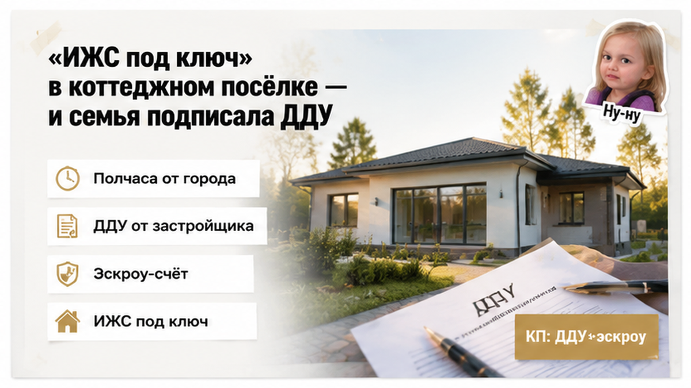
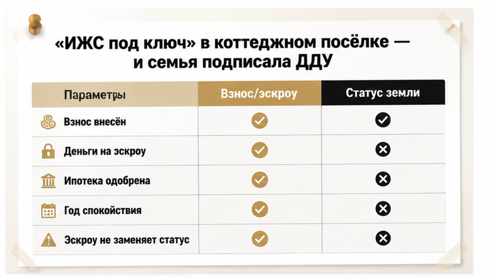
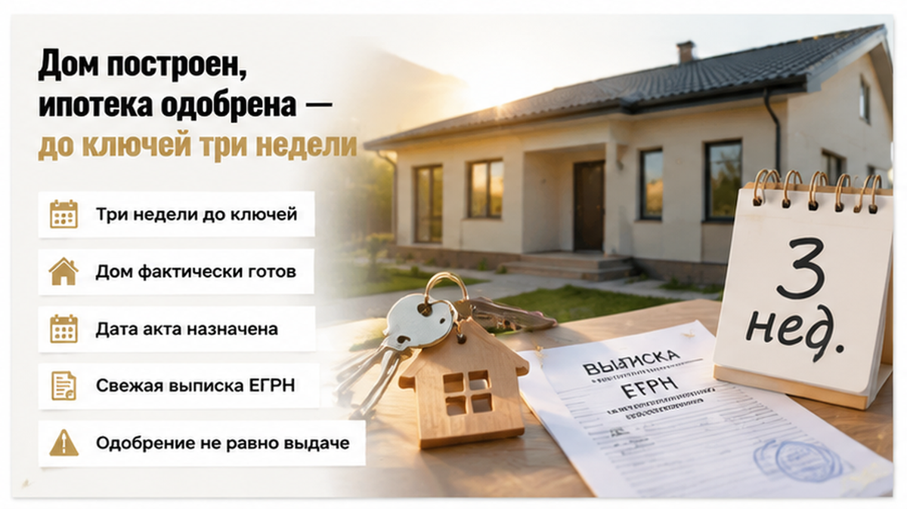
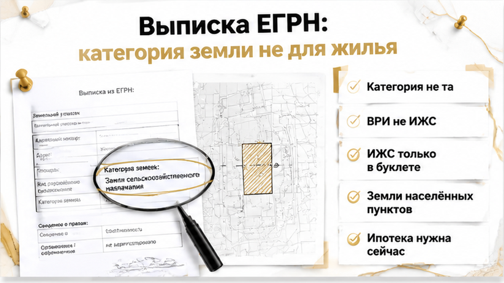
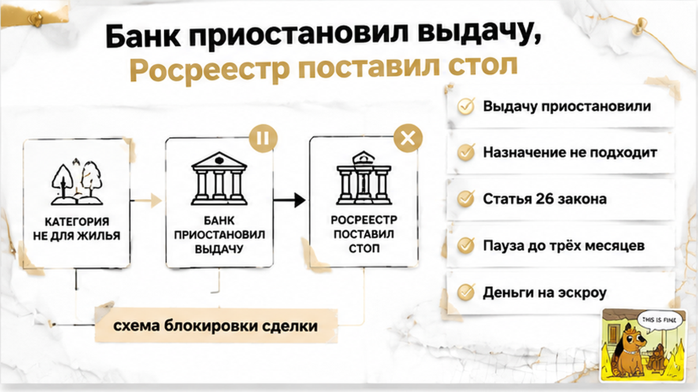
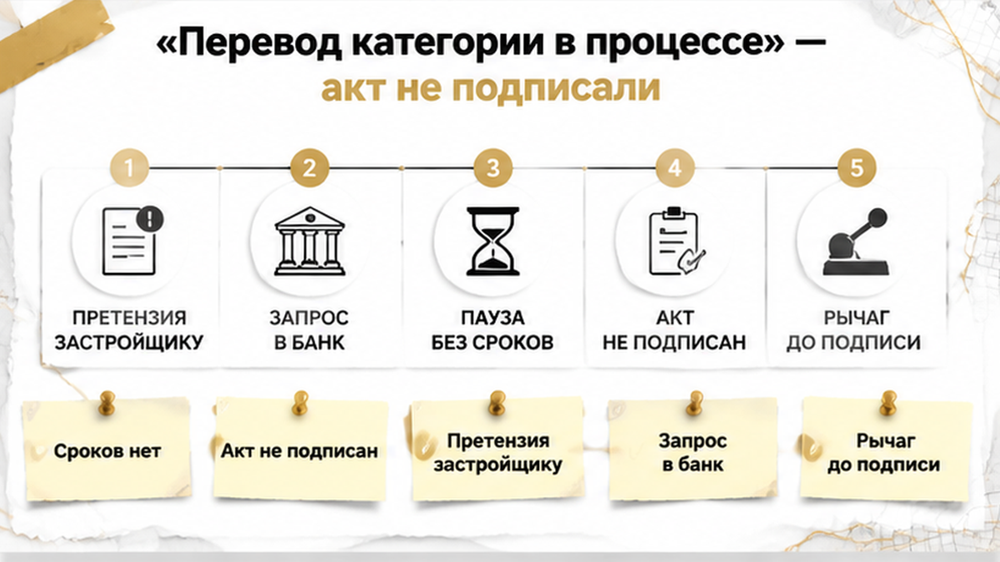
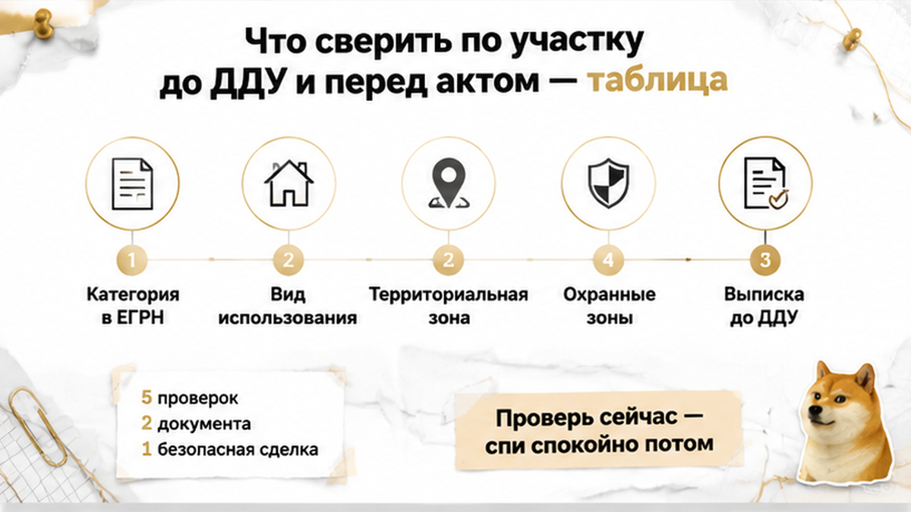

«Выдачу приостанавливаем, вопрос по земле» — звонок из банка пришёл в четверг вечером, за три недели до ключей, когда на кухне уже стояли собранные коробки. Дом в коттеджном посёлке под Тюменью стоял готовый: крыша, окна, отопление заведено, дата акта назначена. Ипотеку семье с двумя детьми одобрили заранее, деньги лежали на эскроу, ДДУ был подписан и зарегистрирован. А в свежей выписке ЕГРН на земельный участок стояла категория, которая никакого «ИЖС под ключ» из рекламного буклета не подтверждала. Дальше — месяц переписки и решение, принятое на той же кухне: акт приёма-передачи не подписывать.
Я Святослав Шакин, The Риэлтор, Тюмень — читаю загородные сделки по строкам документов, а не по рекламным щитам. Сомневаетесь в участке под домом, который вам продают? Напишите в Telegram или MAX — посмотрим выписку до подписи, а не после.

Началось всё так, как начинается половина загородных историй в Тюмени. Посёлок в получасе от города, готовые дома в линию, детская площадка на визуализации, менеджер в офисе продаж говорит понятными словами: «жилой посёлок», «ИЖС под ключ», «прописка, школа, всё как в городе». И договор не с рук, а от застройщика: ДДУ, эскроу-счёт, знакомая схема, которая у людей давно склеилась со словом «безопасно».
Семья ездила смотреть трижды. Спрашивала про газ, про дорогу зимой, про сроки сдачи. Про категорию земли не спросила ни разу — и это нормальная реакция человека, который видит на щите слово «ИЖС» и считает вопрос закрытым. А развилка проходит именно здесь: «ИЖС под ключ» — фраза отдела продаж, а у участка есть две отдельные характеристики, и одна другую не заменяет.
Категория земель — верхний уровень, что за земля вообще. Статья 7 Земельного кодекса перечисляет семь — от сельхозназначения и земель населённых пунктов до лесного и водного фонда. Вид разрешённого использования (ВРИ) — этаж ниже, что на этой земле можно делать: ИЖС, ЛПХ, садоводство, огородничество.
Простым русским: категория — «какая это земля», ВРИ — «что на ней разрешено». Для капитального жилого дома, в котором вы прописываетесь и который банк берёт в залог, нужна связка «земли населённых пунктов + ВРИ под жилой дом». Сельхозземля с ВРИ «огородничество» и слово «ИЖС» в буклете — два разных мира, и рекламный текст ни один из них не переписывает.

Семья подписала ДДУ, внесла первоначальный взнос, кредитные деньги легли на эскроу. Банк ипотеку одобрил, объект по документам застройщика прошёл. И почти год все жили в спокойной уверенности: дом растёт, деньги под защитой, статус земли — забота застройщика.
Эскроу действительно закрывает часть рисков. Но закрывает он риск того, что деньги уйдут не туда, — а не риск того, что земля под домом не годится для жилья. Как выстраивается цепочка от одобрения ипотеки до ДДУ и открытия счёта, я разбирал в отдельном разборе про новостройку и эскроу: каждый следующий шаг там держится на том, что записано в предыдущем документе.

К финалу дом был фактически готов. Оставались мелочи по благоустройству, назначенная дата акта, разговоры про мебель и про то, в какую школу переводить старшего с января. А за три недели до передачи ключей включился обычный технический этап: перед выдачей денег юрист со стороны банка заказал свежую выписку ЕГРН на земельный участок — по кадастровому номеру из ДДУ. Рутина, о которой покупатель в девяноста девяти случаях из ста даже не узнаёт.
Именно на этом месте семьи расслабляются, и я понимаю почему. Одобрение ипотеки психологически воспринимается как точка невозврата: банк проверил, банк сказал «да», значит вопрос решён. Юридически — нет.
Предварительное одобрение не равно обязательству выдать деньги. Банк вправе приостановить выдачу, если объект перестал соответствовать целевому назначению кредита, если данные ДДУ расходятся со сведениями реестра, если по земле видны правовые риски. Ипотека одобрялась под жилой дом на подходящей земле; земля оказалась другой — значит, изменился сам предмет кредита, и решение пересматривается.
С похожей механикой на финише я уже сталкивался: одобренную ипотеку не спасла одна строка в ЕГРН, выплывшая ровно перед регистрацией. Разница только в том, где эта строка сидит: там — по объекту, здесь — по земле под ним. Для семьи с коробками на кухне разницы никакой.
Письмо от банковского юриста упало на почту в тот же четверг, чуть раньше звонка. Жена открыла вложение прямо на кухне, с телефона, пока на плите доходил ужин: выписка из ЕГРН на земельный участок, кадастровый номер тот же, что в договоре. Она долистала до характеристик участка и остановилась. Категория земель — не та, о которой говорили в офисе продаж. Вид разрешённого использования — тоже не тот. Слов «индивидуальное жилищное строительство», которые полтора года жили в буклете, в переписке с менеджером и в голове у обоих супругов, в самой выписке не было нигде.
Муж перечитал строки трижды, потом достал папку с распечаткой презентации посёлка: «ИЖС под ключ», «жилой посёлок», «участок под постоянное проживание» — крупным шрифтом, на первой странице. В тот вечер разница между рекламной формулировкой и строкой в реестре перестала быть абстракцией.
Объясню по-простому, без юридической латыни. У участка два разных параметра, а на площадке их склеивают в одно слово «ИЖС». Категория — крупная полка: для чего земля годится в принципе, для жизни в населённом пункте или, скажем, для сельского хозяйства. Вид разрешённого использования — что конкретно на этом участке разрешено делать: строить жилой дом, разбить огород, держать теплицы. Провалиться можно на любом из двух уровней, и читаются оба не в презентации, а в выписке.

Для дома, в котором вы собираетесь прописаться и который ложится в залог банку, обычно нужна связка: земли населённых пунктов, ВРИ под индивидуальное жилищное строительство и территориальная зона по правилам застройки, где жильё разрешено. И сразу скажу то, что говорю клиентам в такой момент первым делом: «не тот» статус земли не означает, что дом завтра снесут и жить в нём нельзя. Последствия зависят от категории, ВРИ, правил застройки, документов застройщика и от того, что и как построено. Но для ипотеки и регистрации расхождение с обещанным ИЖС — препятствие прямо сейчас. Не «в перспективе». Сейчас.
И деталь, которая удивляет даже опытных покупателей: сама по себе запись «для ИЖС» в реестре — тоже не индульгенция. Землю описывает не один документ, а несколько слоёв сразу, и слои умеют противоречить друг другу. К этому вернусь ниже, в таблице.

Утром перезвонили и объяснили словами. Спокойно, почти технически: «Выдачу приостанавливаем. Объект не соответствует целевому назначению кредита. Нужно привести документы по участку в соответствие». Муж переспросил про одобрение — ему ответили: одобрение остаётся, перечисления не будет, пока по земле нет ясности.
Здесь рушится самое популярное бытовое убеждение. Люди читают одобрение как точку невозврата: банк проверил, банк сказал «да», значит вопрос закрыт. Юридически это не так. Предварительное одобрение — это не обязанность банка выдать деньги. Банк смотрит на предмет залога отдельно и вправе остановить выдачу, если земля под домом не та, подо что кредит одобрялся, если данные ДДУ не бьются с реестром. Одобренная заявка и профинансированная сделка — две разные стадии. Как это выглядит на самом финише, я показывал на истории со сменой юрлица застройщика.
Параллельно отозвался Росреестр: по документам вынесли приостановку по ст. 26 закона 218-ФЗ — то есть основания считают устранимыми, а пауза по такой статье тянется до трёх месяцев. Это не отказ. Отказ — другая статья, 27-я, и он наступает, когда причины в срок не устранили. Разница принципиальная: приостановка — пауза с домашним заданием, отказ — закрытая дверь по этому пакету. И земельные причины у приостановок типовые: не тот вид разрешённого использования, нет координат границ, пересечение участков, охранные зоны, конфликт с градостроительными ограничениями.
С 1 января 2026 года у приостановки появился внесудебный путь: жалобу подают в течение 15 рабочих дней, рассматривают тоже до 15 рабочих дней. Инструмент рабочий, только лечит он формальные и процедурные дефекты, а не саму категорию земли. Если участок по документам не предназначен для жилья, жалобой строку в реестре не переписать.
Теперь про деньги, потому что это первый вопрос, который задают. Средства лежали на эскроу — и это оказалось единственной хорошей новостью недели. Застройщик их не получил: при эскроу деньги уходят продавцу только после того, как выполнены условия договора. Но и «просто забрать» их нельзя: сначала расторжение ДДУ, потом регистрация расторжения в Росреестре, и только затем банк закрывает счёт и возвращает деньги дольщику — это ст. 15.5 закона 214-ФЗ, в сроки, прописанные в договоре эскроу. Если бы раскрытие уже прошло и деньги ушли застройщику, разговор был бы совсем другой: претензии, суд, ожидание. Заморозка средств на эскроу — штука неприятная, но она же держит рычаг на стороне покупателя.

Разговор в офисе застройщика занял сорок минут и не дал ни одной даты. Менеджер говорил ровно, по кругу: «вопрос решается», «участок готовят к переводу», «юристы работают». И тут же предлагал подписать акт сегодня — дом стоит, ключи в сейфе, зима на носу, чего тянуть. Отец спросил одно: покажите бумагу, где есть срок. Бумаги не было — была папка с перепиской и фраза, что процедура длительная и от застройщика зависит не всё.
Фраза честная, только смысл у неё другой, чем вкладывал менеджер. Ни категория, ни вид разрешённого использования не считаются изменёнными, пока новая строка не появилась в ЕГРН; до этого «перевод в процессе» — намерение. Банк смотрит в выписку, Росреестр смотрит в выписку, и оба видят то же самое, что семья увидела тремя неделями раньше.
Вечером они разложили на кухонном столе договор, выписку и письмо из банка. Спорили долго. Жена говорила: дом построен, дети уже разделили комнаты, давайте въедем и будем разбираться на месте. Муж считал иначе: подписанный акт — это фактическое принятие дома, а пока акт не подписан и деньги лежат на эскроу, у застройщика есть причина шевелиться. Подпись эту причину убирает.
Акт не подписали.
Вместо подписи отправили письменную претензию: зафиксировали расхождение между обещанным в договоре и тем, что стоит в свежей выписке, потребовали конкретный срок и документы о ходе процедуры. И запросили у банка письменное разъяснение — на каком основании приостановлена выдача и что должно измениться в документах, чтобы кредит вышел. Это не победа и не поражение: это перевод разговора из устного в бумажный, где обещание либо превращается в срок, либо перестаёт существовать.
Стоит ли подписывать акт и забирать построенный дом, если застройщик обещает позже перевести категорию земли, но сроков не называет?

Вся история упирается в две точки: до подписания ДДУ и за две-три недели до акта — статус участка с момента брони мог не измениться, а мог измениться не в ту сторону. Вот на что я смотрю сам, когда клиент приносит договор на дом в посёлке.
| Что проверяю | Строка или документ | С чем сверяю | Тревожный сигнал |
|---|---|---|---|
| Категория земель | Выписка ЕГРН на участок, кадастровый номер из ДДУ | Ст. 7 ЗК РФ, обещанный жилой статус | Сельхозназначение вместо земель населённых пунктов |
| Вид разрешённого использования | Та же выписка, раздел о ВРИ | Возможность капитального жилого дома | Огородничество, ЛПХ вне границ населённого пункта, ВРИ без ИЖС |
| Территориальная зона | ГПЗУ, сведения по ПЗЗ | ВРИ в выписке | Зона не допускает жилую застройку при «ИЖС» в ЕГРН |
| Ограничения и охранные зоны | Раздел выписки об ограничениях | Санитарно-защитные и охранные зоны | Участок в СЗЗ — жильё нельзя даже при нужном ВРИ |
| Право застройщика на землю | Выписка, проектная декларация | Требования 214-ФЗ | Аренда с истекающим сроком, обременения |
| Ход обещанного перевода | Решение, акт, запись в ЕГРН | Порядок 172-ФЗ, ст. 39 ГрК РФ | Только устные обещания и «юристы работают» |
| Позиция банка по объекту | Письменные требования к предмету залога | Категория и ВРИ из выписки | Одобрение получено без сверки земли |
Самая неочевидная строка — четвёртая. В выписке может стоять ровно «для индивидуального жилищного строительства», а строить всё равно нельзя: мешает территориальная зона или санитарно-защитная зона по другим документам. Одной строки в выписке мало — землю описывают несколько документов, и они умеют спорить друг с другом.
Сбой на последнем шаге вообще не только про землю. Я разбирал, как одобренная ипотека не спасла сделку от одной строки в ЕГРН, как деньги дольщиков зависли на эскроу на год и как смена юрлица застройщика остановила сделку перед самым финишем. Общее одно: проверка, которую отложили на потом, приходит сама — и всегда в неудобный момент.
Есть на руках договор на дом в посёлке и сомнение по земле — пришлите кадастровый номер участка, посмотрю выписку и скажу, что там на самом деле. Телеграм: t.me/Tyumen_Rieltor, MAX: max.ru/id561413315447_biz.
Что осталось у этой семьи в руках: неподписанный акт, пока категория и ВРИ в выписке не совпадают с обещанным ИЖС; деньги на эскроу, которые застройщик не получит, пока условия договора не выполнены, — это единственный реальный рычаг, и работает он ровно до подписи; письменная переписка вместо устных заверений — претензия со сроком, запрос в банк, документы о ходе процедуры.
Дом от этого не станет жилым за неделю, и я не буду делать вид, что история закончилась хорошо, — она ещё не закончилась. Но семья держит ситуацию, а не ситуация её: они знают, какая строка должна измениться, кто её меняет и что происходит с их деньгами, пока строка прежняя. И да: одна выписка по кадастровому номеру из договора — до ДДУ — сняла бы весь этот месяц. Стоит она дешевле одной поездки в посёлок.